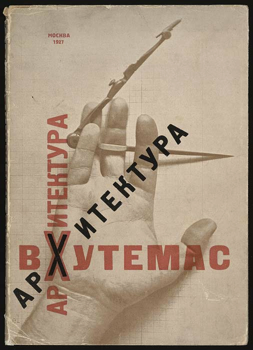

文字は、横に読むだけではない。
赤い文字は縦と横、黒い文字はななめに並びます。手と道具の写真も加わり、読む方向と目の動きが変わります。
作品・制作の例3件を紹介しています。実作品画像1点、参照・関連画像0点。画像の収集は継続中です。
国立の美術・技術教育機関
Vkhutemas
ヴフテマスは、1920年にモスクワにできた、美術と技術を学ぶ学校です。絵の描き方だけでなく、木や金属、布、建築も扱いました。ひとつの画風や、デザイナー集団の名前ではありません。
実作品を見る

画像を表示できませんでした。下の出典ページで確認できます。
エル・リシツキー（表紙） / 1927
赤い文字は縦と横、黒い文字はななめに並びます。手と道具の写真も加わり、読む方向と目の動きが変わります。
エル・リシツキー、ヴフテマス建築学部作品集の表紙、1927年。画像：Wikimedia Commons、File:Vkhutemas.jpg、2016年版。
出典で作品・資料を見る ↗原作の保護期間満了・平面作品の忠実な複製（PD-Art）
1927年刊行の表紙について、日本・米国の保護期間等に基づく利用。書籍全体や他の写真を一括して自由利用とはしません。
Commonsの2016年版にある、平面作品の忠実な複製という表示に基づきます。旧版のCC BY-SAをこの画像には付けません。
取得したJPEGを変更せず使用。原寸を超えて表示しません。
CC0や美術館からの個別許諾を意味しません。全法域での自由利用を保証するものではありません。
画像の利用条件 ↗書籍・グラフィック
学校が自分たちの建築の仕事を発信した資料。学校とのつながりが明確な表紙デザイン。
作品・資料の出典を見る ↗作品名（出典表記）：Architecture of VKhUTEMAS: The Works of the Department of Architecture, 1920–1927（ヴフテマスの建築）表紙
El Lissitzky（エル・リシツキー。表紙）、N. Dokuchaev（N・ドクチャーエフ）、Pavel Novitskii（パーヴェル・ノヴィツキー）（著者） / 1927 / 書籍・グラフィック
招待状・ドローイング
学校における新しい芸術活動を伝える、実際に発行された資料。
作品・資料の出典を見る ↗作品名（出典表記）：Invitation to a Futurist Happening（未来派の催しへの招待状）
Mikhail Tarkhanov（ミハイル・タルハーノフ）に帰属。発行：ヴフテマス / 1921年3月5日 / 招待状・ドローイング
建築計画・模型
学生が考えた大きな建築計画を知る例。未建設であり、模型写真が資料として残る。
作品・資料の出典を見る ↗作品名（出典表記）：Lenin Institute and Library（レーニン研究所・図書館）卒業設計
Ivan Leonidov（イワン・レオニドフ） / 1927 / 建築計画・模型
入学後の基礎課程では、色や構成などを学び、その先で専門分野へ進みました。
産業と教育のために人材を育てるという目的があり、国の政策とも関わっていました。
のちにヴフテインへ改組され、1930年に閉じました。
改組の年は機関資料に1927年と1928年の表記があるため、ここでは一つに断定しません。
決まった配色を探すより、色をどのように学んだかを考えます。赤と黒だけが学校の色ではありません。
《ヴフテマスの建築》の表紙では、文字の向きと手や道具の組み合わせに注目します。
図面、模型、写真は別の資料です。模型の写真を、完成した建物の写真と取り違えないようにします。
同じ学校でも、基礎課程の実験と、専門分野の計画では考える大きさや目的が違います。
バウハウスと共通点や交流はありますが、バウハウスをそのまま写した学校ではありません。両校はそれぞれの土地と制度の中で発展しました。構成主義という運動と、ヴフテマスという学校も分けます。
紙を折った形を、光の向きを変えて見てみましょう。平らな紙から立体をつくる実験は、建築や製品を考える入口になります。
ここに挙げた作品は、考え方やつくり方の違いを比べるための例です。この分野の全地域・全時代を網羅するものではありません。
作品・制作の例3件を紹介しています。実作品画像1点、参照・関連画像0点。画像の収集は継続中です。